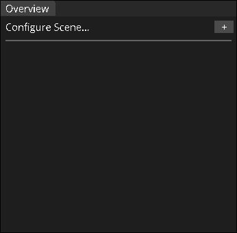
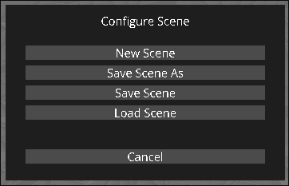
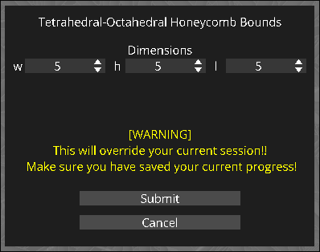
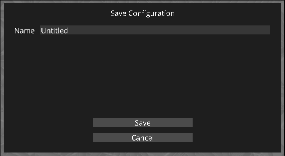
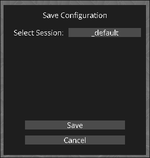
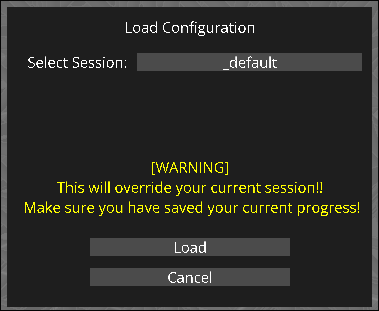

Scene Overview
Push your boundaries!
Broad Overview
The scene overview panel is located in the top right of the application, and lets you create a new configuration, save the current one, or load an existing one!

Configuring a Boundary
Because computers have limited memory, a configuration cannot be infinite! However, we can do the best we can.
To configure a boundary, click the "+" button in the top right of the panel. This will open a popup with a list of options to choose from.

Once you click the new scene button, you'll be taken to the next popup stage, where you can specify the dimensions of your configuration by clicking and dragging each number button to your desired number. At the moment, there is a hard cap of 20 in any dimension, with the maximum being 20x20x20. This is because if it gets any larger, it will be unlikely that your given device will be able to comfortably play around with the configuration.

Saving Your Session
To save your session, you can either save your session to a new name, or overwrite an existing one.
To save your session under a new name, click the "Save Scene As" button in the popup.

Once you click the new scene button, you'll be taken to the next popup stage, where you can specify the name of your session to save. Click the input box and type out what you need, and then hit Submit when you're done!
To save your session under an existing name, such as the one you may have just saved, you can instead click the "Save Scene" button in the initial dialog.

Here you can click for a dropdown of available names that you've saved under before. This will overwrite that save with the current session you've configured.
Loading A Session
Now that you've saved a session, how can you load one? To do so, click on the "Load Scene" button on the initial dialog.

Here you can click on the select session button to get a dropdown menu of available names you've saved before. Once you click the one you want, click "Load" to load it up!